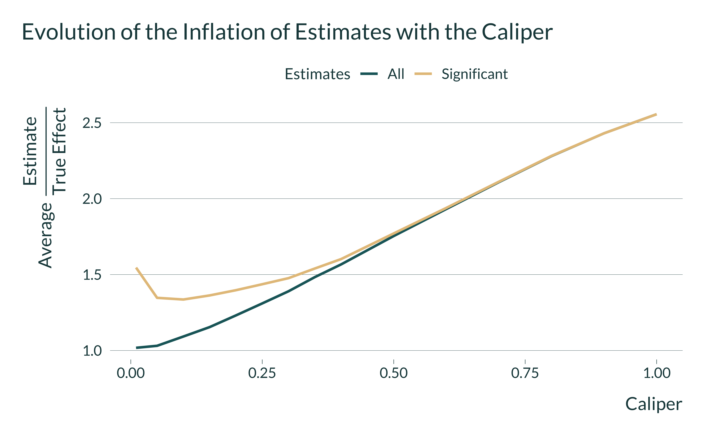

In this document, we show through simulations the Type M error - omitted variable bias trade-off for observational studies relying on matching methods. We create fake-data similar to those used for analyzing non-randomized labor training program. Should you have any questions or find coding errors, please do not hesitate to reach us at vincent.bagilet@columbia.edu and leo.zabrocki@psemail.eu.
Packages Loading
We first load the required packages to set-up the simulations:
# load required packages
library(knitr) # for creating the R Markdown document
library(tidyverse) # for data manipulation and visualization
library(MatchIt) # for matching analysis
library(lmtest) # for modifying regression standard errors
library(sandwich) # for robust and cluster robust standard errors
library(DT) # for displaying the data as tables
library(mediocrethemes) # vincent's custom ggplot2 theme
library(tictoc) # for measuring running time
library(beepr) # for making a sound when the code is done
library(here)
# set ggplot theme
set_mediocre_all(pal = "coty") #, background = TRUE) #for presentations
Data Generating Procedure
General Approach
To illustrate the the Type M error - OVB trade-off, we simulate fake-data from a non-randomized labor training program targeting young individuals:
- We first create the units identifiers (
id). - We then simulate 4 correlated binary covariates:
- The true propensity score variable
true_psis drawn from \(N(0.3, 0.1)\) for control units and from \(N(0.5, 0.12)\) for treated units. - Once the the true propensity scores are created, we define the potential outcomes of each individual. Here, potential outcomes represent the income (in euros) of the individuals if they undertake the training program or not. The potential outcome without treatment adoption, Y(0), is simulated using the following equation:
y_0 = 2000 * true_ps + rnorm(n(), mean = 300, sd = 200)
- We finally simulate the potential outcomes when individuals benefit from the training program. The average treatment effect on the treated (ATT) was set to 100. The average treatment effect on the control (ATC) was set to 50.
Function to Generate the Data
We display below the code for the function generate_data_matching() which creates the dataset. Its single argument takes the desired sample size.
generate_data_matching <- function(sample_size) {
data <- tibble(id = 1:sample_size) %>%
mutate(
treatment = rbinom(n = sample_size, size = 1, prob = 0.25),
true_ps = ifelse(
treatment == 0,
rnorm(n(), mean = 0.3, sd = 0.1),
rnorm(n(), mean = 0.5, sd = 0.12)
),
true_ps = case_when(true_ps > 1 ~ 1,
true_ps < 0 ~ 0,
true_ps >= 0 & true_ps <= 1 ~ true_ps),
# generate the potential outcomes
y_0 = 2000 * true_ps + rnorm(n(), mean = 300, sd = 200),
y_0 = y_0 %>% round(., 0),
y_1 = ifelse(treatment == 1,
y_0 + 100,
y_0 + 50),
# generate observed outcomes
y_obs = ifelse(treatment == 1, y_1, y_0) %>% round(., 0)
)
return(data)
}
EDA for One Dataset
We run one iteration of the function generate_data_matching() to explore the resulting data with 500 units:
# run the function for a sample of 500 units
data <- generate_data_matching(500)
# display the table
datatable(data)
About 25% of units are treated. We display below the true propensity score distributions by treatment status:

We can finally see how the observed revenue is distributed across the two groups:

And we can check whether the ATT and ATC were correctly simulated. The ATT is computed such as:
and the ATC:
The data have been simulated as we wanted.
Outcome Regression Analysis
What would happen if we analyze our simulated datasets with a simple outcome regression model? Would we recover the true answer?
We first create a regression function to run a simple regression model where we simply regress the observed income on the treatment indicator:
We then simulate 1000 datasets of 500 units and run the regression model:
# first simulate simulation id
data_simulations <- tibble(sim_id = 1:1000) %>%
# then simulate data
mutate(data = map(sim_id, ~ generate_data_matching(500))) %>%
# finally run the reg analysis
mutate(results = map(data, ~ outcome_regression(.)))
# unnest the results
data_simulations <- data_simulations %>%
select(-data) %>%
unnest(results)
We plot the distribution of estimates:
data_simulations %>%
ggplot(., aes(x = estimate)) +
geom_density(colour = NA) +
geom_vline(xintercept = mean(data_simulations$estimate)) +
geom_vline(xintercept = 100, colour = "#EAA95C") +
scale_x_continuous(breaks = scales::pretty_breaks(n = 10)) +
xlab("Revenue (in euros)") + ylab("") +
labs(fill = 'Status:') +
theme(panel.grid.major.y = element_blank(),
axis.text.y = element_blank())

The average of estimates is equal to 500.
Matching Procedure
We now implement a simple matching where:
We implement below a propensity score matching procedure where:
- each treated is matched to its most similar control unit. This is a 1:1 nearest neighbor matching without replacement.
- the distance metric used for the matching is the propensity score.
- To see how the bias, statistical power and type M error evolve, we vary the matching distance (the caliper), which is expressed in standard deviation of the propensity score distribution.
Proposensity Score Function
We display the below the code for the function ps_function() which runs the matching procedure. It takes to inputs: (i) a dataset and (ii) the value of the caliper.
# propensity score analysis function
ps_function <- function(data, caliper_value) {
matching_results <- matchit(
treatment ~ id,
distance = data$true_ps,
caliper = caliper_value,
data = data
)
data_matched <- match.data(matching_results)
proportion_matched <- sum(data_matched$treatment)/sum(data$treatment)*100
true_effect <-
mean(data_matched$y_1[data_matched$treatment == 1]) - mean(data_matched$y_0[data_matched$treatment == 1])
model_fit <- lm(
y_obs ~ treatment,
data = data_matched,
weights = weights
)
ps_att <- broom::tidy(coeftest(model_fit, vcov. = vcovCL, cluster = ~ subclass),
conf.int = TRUE) %>%
filter(term == "treatment") %>%
select(term, estimate, p.value, conf.low, conf.high)
return(bind_cols(ps_att, proportion_matched = proportion_matched, true_effect = true_effect))
}
We run the function on the data we previously created:
# testing the function
ps_function(data, caliper = 0.5)
The function returns the estimate for the ATT, the associated \(p\)-value and 95% confidence interval, the portion of matched treated unit and the true value of the ATT.
Simulations
We implement Monte-Carlo simulatiuons for a sample size of 300 units and differents values of the caliper:
data_simulations <- tibble(sim_id = 1:300) %>%
# then simulate data
mutate(data = map(sim_id, ~ generate_data_matching(300))) %>%
# generate caliper
crossing(caliper = c(seq(from = 1, to = 100, by = 1)/100)) %>%
# finally run the matching analysis
mutate(results = map2(data, caliper, ~ ps_function(.x, .y)))
# unnest results
simulations_matching <- data_simulations %>%
select(-data) %>%
unnest(results)
# saveRDS(simulations_matching, here("Outputs/simulations_matching.RDS"))
Once the simulations have been run, we compute the summary statistics using the summarise_simulations() function:
simulations_matching <- readRDS(here("Outputs/simulations_matching.RDS"))
summarise_simulations_matching <- function(data) {
data %>%
mutate(significant = (p.value <= 0.05)) %>%
group_by(caliper) %>%
summarise(
proportion_matched = mean(proportion_matched),
power = mean(significant, na.rm = TRUE)*100,
bias_sign = mean(ifelse(significant, estimate/true_effect, NA), na.rm = TRUE),
bias_all = mean(estimate/true_effect, na.rm = TRUE),
.groups = "drop"
) %>%
ungroup()
}
We apply the function to data_simulations:
summary_simulations_matching <- summarise_simulations_matching(simulations_matching)
And plot the results:
